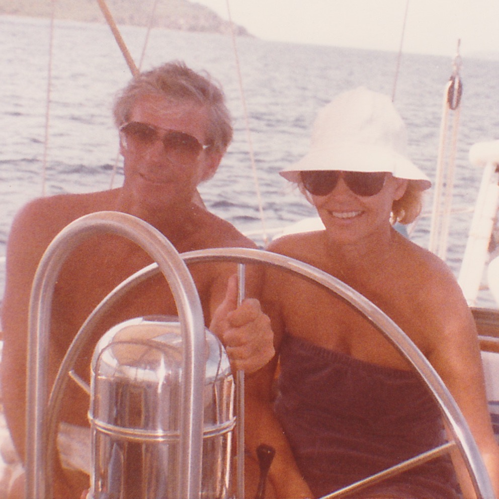
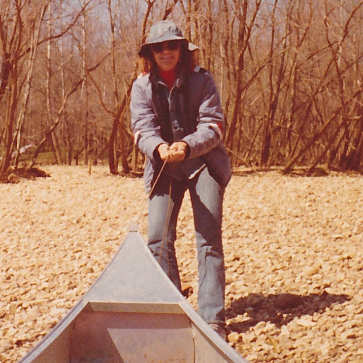

The photo to the right is from an incredibly exciting canoeing trip where Jude camped and canoed from Ponco to Pruitt Arkansas. As one of the most fun (and perhaps most dangerous) trips Jude has ever taken, there was no shortage of thrills as the Buffalo River has whitewater rapids that are not for the faint of heart. One run was so treacherous it had a massive boulder called “suicide rock” directly in the canoe’s path that spelled disaster for those unable to paddle away from the deadly obstacle. Multiple canoes crashed during that trip, but luckily Jude’s was not one of them, although she mentions there were a few near misses.
Jude’s desire to experience fun and exciting things with her family has never subsided. The photo to the left of this text is of Jude, her husband, Jim, nephew and niece-in-law Andrew (site author) and Claudia. Having lived in Seattle for some time, it was not Jude’s first time at the Space Needle, however, as with most things with Jude, the view never seemed go stale with her. After taking in the breathtaking views, Jude, Jim, Andrew, and Claudia also shared a nice meal at a popular shopping and entertainment district called Pike Place Market. Since her family is what Jude cherishes most, it was a perfect day for everyone.
The photo to left was taken on Jude and Jim’s honeymoon back in 1986. Jude and Jim were married in Fort Lauderdale, Florida on September 15 and as any adventurous lovebirds would, the very next day they chartered a sailboat and set course for the Bahama Islands. The trip spanned for 10 days where Jude and Jim, as well as their friendly crew, ate, drank, swam, snorkeled, and scuba dove all throughout the Caribbean. Jude and Jim even explored the underwater shipwreck of the RMS Rhone, that sits a terrifying 75 feet below the surface.